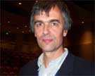

International Congress of Genetics 2003 - Day 2 - Tuesday 8 July 2003
Profile:
James Mallet
by Julie Clayton
Biomednet.com
James
Mallet is Professor of Biological Diversity at University College
London, where he is fulfilling a childhood dream of studying
butterflies. Among other things, he is investigating the true origin of
species, which could have important implications for efforts at
conserving biodiversity. He is also lobbying for a global inventory of
all species to be created and made freely available on the internet,
aptly named the Taxome Project.
How did you become interested in this line of research?
I was a naturalist as a kid - I got it from my dad, an amateur
naturalist. We traveled widely abroad because he was in the diplomatic
service and I became absolutely fascinated at a very early age,
especially by the Amazon Basin. I did zoology at Oxford University and
was lucky enough to travel back to South America, and had fantastic
experiences.
How did your early research career develop?
It started with my PhD. I was in Britain trying to get a job in a
fairly bleak academic environment, and people wanted me to study snails
on the South Downs, which I really wasn't interested in. So on the off
chance, I applied to the University of Texas to do a PhD there. I was
initially rejected, but then they called me saying that they had a
place but I had to get there by Friday. I was in the middle of doing an
MSc course in Newcastle at the time so it was a bit of a nightmare, but
I eventually got there on Monday, and that's what really launched me,
going to America - it would have been harder to do in Britain.
What appeals to you about butterflies?
I've always been interested in speciation and evolution. I thought that
if I studied something that I really knew a lot about - I'd reared
caterpillars as a kid and had learnt about butterflies - it would give
me an advantage, and I think it has. I've concentrated on Lepidoptera,
which I think are fascinating. There are a number of really odd and
exciting things about Lepidoptera, and one of them is that they have
about 10% of the world's species. They are a huge part of the total
diversity. Also they're weird genetically - the females are XY and the
males are XX, which is the other way round from humans and Drosophila.
They have strange chromosomes, which nobody understands yet: they are
thought to be holocentric, so instead of having a centromere, the
attachment of the spindle fibers in cell division occurs all over the
chromosomes instead of one particular defined place. It's a new world
but because they're not model organisms people haven't really got into
it, which makes them more exciting to me.
Who has most influenced your career?
My advisors: first Larry Gilbert, who worked on Heliconius and accepted
me as a PhD student at the University of Texas. He's a great naturalist
with boundless enthusiasm, vision, and imagination. He had lots of
crazy ideas. I set out on my PhD to disprove all of these ideas, and it
was an excellent exercise because I became convinced that he was
largely right about a third of them. I really admire that imagination
which is very important in science. Then Nick Barton, who was at UCL
when I first became a postdoc, and is now at the University of
Edinburgh. He's a very well known theoretical population geneticist and
taught me a lot about evolution and hypothesis testing and statistics.
He showed how you could actually go out to natural populations, measure
parameters, and then get firm and robust estimates of what was going on
in terms of natural selection and gene flow. That's incredibly powerful
and comes from his physics back-of-the-envelope kind of mentality,
which is unusual in mathematical biology still.
What do you consider to be your best idea?
I'm not sure about best, but it's a theoretical idea that hybrid zones
might move. It's the craziest idea and it turned out to be correct. A
hybrid zone is a zone of interaction between two identifiably different
genetic forms. It might involve single gene or multiple gene
differences between two uniform sets of populations. It's where the
sharp change occurs that you get all the recombinants and different
forms caused by hybridization. I'd submitted a paper to show
theoretically that hybrid zones could move, and it was rejected it on
the grounds that hybrid zones couldn't possibly move - they were rooted
to the spot. We've since shown that in nature there are hybrid zones
trundling around the landscape. I'm not sure that it's terribly
important in the world, but I just like it because it's so strange. I
discovered a reference by Nick Barton to show that a hybrid zone could
in fact move, after I'd had my brain wave. What we have shown is that
if the hybrid zone is maintained by some sort of intrinsic process
within the species, such as hybrid inviability, sterility, or selection
against forms with the wrong type of warning colors, the hybrid zone
won't move. But if there's any bias, such as one of the forms being
slightly fitter, there will be movement of the hybrid zone at a
constant rate.
What is the progress of the Taxome Project?
Not very far - we haven't got any money for it. I'm impressed by the
success of genome databanks. It seems astonishing that we don't have
the equivalent for species descriptions that have been going on using
Linnaeus' system for 300 years. We need to database everything that can
be used to identify taxa, so that anybody anywhere in the world can go
onto the worldwide web and maybe identify to a species level something
that they have in their hand just by means of a picture. It's not that
difficult, we've got the technology to do it. We've got all the
information, but it's wrapped up in extremely obscure publications so
that most people in the world do not have access to it.
One would have thought the standardization was already out there ...
It isn't, it's just extraordinary. If you found an obscure insect
feeding on your crop in Ethiopia, or something, you'd have real trouble
- how could you possibly afford access to these vast libraries in the
Natural History Museum in London? It seems to me that an excellent aid
program would be for us to provide all the information we have on the
web. I think the Natural History Museum is, and will, take a leading
role in that; it probably has over half the world's type specimens of
the butterflies, and Lepidoptera in general.
Where would you like to be in 5 years time?
I'd like to get another grant. I would like to get more involved in big
projects, such as finding genes for color pattern in Heliconius, doing
major phylogenies in large groups of Lepidoptera, and getting taxonomy
on the web organized.
Are you involved in any conservation projects?
Not directly but I do feel that some of my work is involved as a basis for conservation.
It seems to me that you can't conserve species if you don't know about its ecology.
You really have to know how they survive in the wild in order to know how to
conserve them. You might also need to know how they evolved as a separate species
in order to know how to conserve them. Knowing the origin of biodiversity is
as important as knowing how to maintain biodiversity. Some ideas about conservation
in the Amazon Basin have depended on particular viewpoints about speciation,
and if those viewpoints are wrong - particularly allopatric speciation - there's
a possibility at least that the conservation mechanisms based on them will also
be wrong. I very much believe that basic research even on something as esoteric
as butterfly evolution is going to be useful. I don't think the public wants
us to do things just for fun.